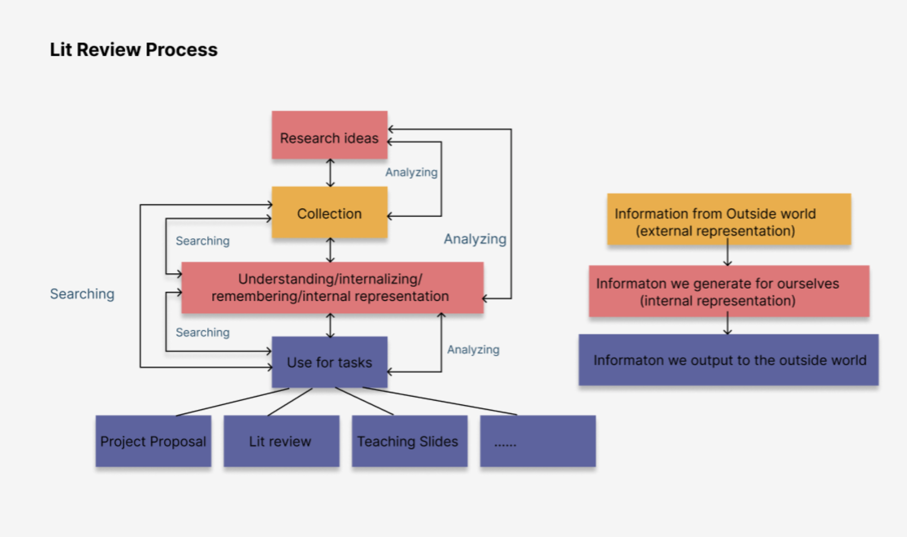
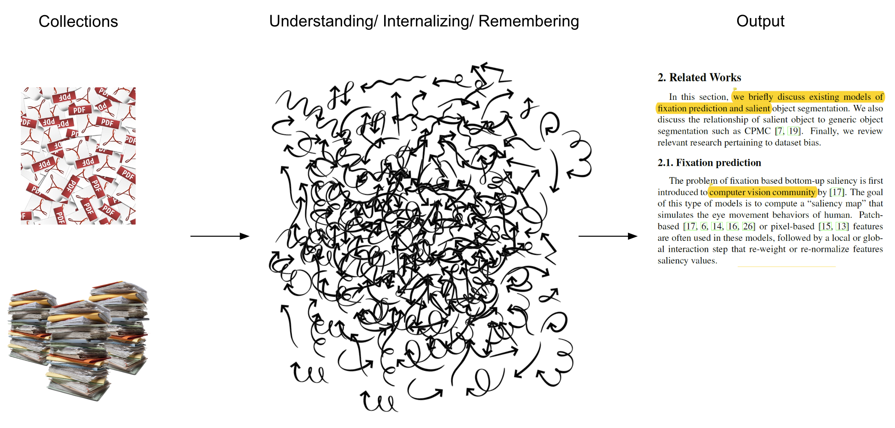

From Papers to Paper
In this project, we aim to understand how researchers conduct literature review and how they transform materials such as papers, citations, notes, and highlights into a new paper's related work section.
Generally, literature review process can contain complex back-and-forth manipulating, organizing, and sense-making process as diagrammed below.
We want to design a tool that can bridge, help and facilitate the literature review process between paper collections and final output:
To achieve this, we conducted a set of interview studies and participatory design sessions to understand the needs and design tools accordingly. Our outcome and contribution contains:
Interview Study Results
We conducted seven interviews with Ph.D. students with different backgrounds. Here we will list the interview questions in the Appendix section later.
The interview takeaways can be found in the following slides link (from slide 5-8)
Google Slides LinkParticipatory Design Session
We conducted one participatory design session. The session contained the following process with 3 Ph.D. students.
Our results are shown below:
Deliverables
Core Ideas
-

Visualize Connectivity
Our solution visualizes important paper connections, mainly with 4 paper categories coded with colors: Highly-cited paper, highly related paper, related paper, and survey paper.
Besides visualizing existing papers, we propose a novel way to center your to-be-written paper in the center and support discovering its connections with other papers.
-
Support Discoverability
Each paper node can be expanded by mouse hovering, and each edge (connection) can be expanded or added by LLM models or user input.
Users can discover papers' connections and new papers by dragging and dropping papers in the "Papers to be added" list in the bottom-left corner.
-
Human-AI Approach
For two existing papers, users can add connections (e.g., common tags, keywords, methods, etc.) or differences on their own to help identify paper connection in the bigger picture. They can also choose summarized results generated by large language models, which generates two papers' differences and connections (see pop-up window on the top-right).
For papers to be connected with your paper to write, a user input window and intelligent recommendations are provided. Users can organize their thoughts using recommendations generated by the system.
-

Thematic Clustering
A typical paper can have more than 50 papers to cite. It is challenge to visualize them all in a meaningful way and not to occlude each other.
To address this, our system clusters papers with similar thematics and only highlights papers with strong connections (e.g., highly cited in this field or highly related topics). Also, the connection arrows are intelligently reduced to only visualize important connections based on our algorithm.
Design Prototype
For more details, please refer to our presentation:
Google Slides LinkOr our Figma prototype file
Figma LinkAuthors: Chris Fu and Zhuohao (Jerry) Zhang